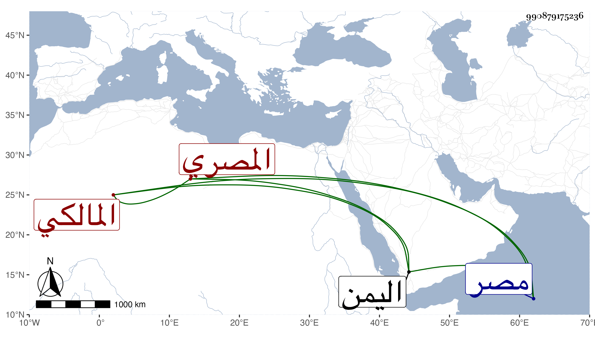

0902Sakhawi.DawLamic.ITO20230111-ara1.EIS1600.990879175236
Biography ID: 990879175236
406
الحسن بن سويد بدر الدين المصري المالكي والد عبد الرحمن الآتي ويعرف بابن سويد . قال شيخنا في أنبائه أصله من سوق شنودة ، وسلفه من القبط ويقال إن والده كان يبيع الفراريج ، ذكر لي ذلك بعض ثقات المصريين عن شيخنا شمس الدين المراغي أنه شاهده ، ورزق من الأولاد جماعة نبغوا وصاروا من أعيان الشهود بمصر منهم شمس الدين الأكبر صاحب الترجمة فلازم الاشتغال وحضور دروس شيخنا الشمس المذكور ومركز الشافعية بباب العيد والمتجر الكارمي ومجلس الفخر القاياتي ، ثم حصل مالا واتجر فيه إلى اليمن سنة ثمانمائة ثم عاود البلاد مرارا واتسع أمره جدا وتزوج أم هاني ابنة الهوريني سبطة الفخر المذكور بعد موت زوجها والد السيف الحنفي وإخوته فاستولى على تركة جدها بعد موته وأدخل معه فيها من شاء ، وبنى مدرسة مقابل حمام جندر مات قبل اكمالها وأوصى لتكمينها بأربعة آلاف دينار فصيرها بنوه بعد جامعا وأبطلوا ما كان صيره هو من كونها مدرسة والتدريس الذي كان بها وحصل في ذلك خبط كبير . مات في أوائل صفر سنة تسع وعشرين .
